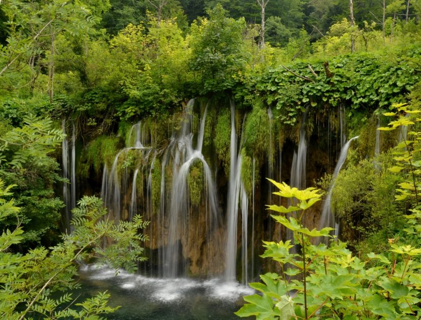
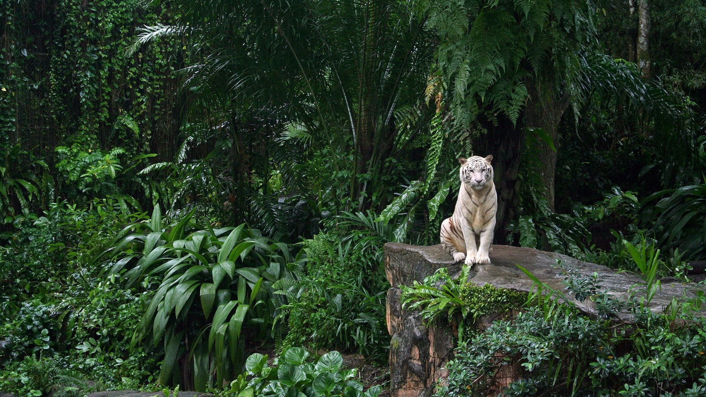

Selva

Información
La selva es conocida por diversos nombres, como jungla y bosque lluvioso. Se caracteriza principalmente por albergar árboles de gran altura y una extensa cantidad de especies de fauna y flora. Se cree que es el bioma más antiguo de la Tierra, y que su aspecto no ha cambiado mucho durante los últimos 70 millones de años.
Se ha llegado a considerar a las selvas puntos calientes del planeta al encontrarse principalmente en regiones de clima tropical y albergar la mayor parte de las especies. Contiene los hábitats más importantes del planeta, lo que la hace el bioma con mayor biodiversidad.
Ubicación geográfica
Las selvas cubren alrededor del 6 por ciento de la superficie terrestre y se localizan en diferentes latitudes del mundo, pero especialmente entre el Trópico de Cáncer y el Trópico de Capricornio. Abarcan el continente americano, africano y asiático, llegando también a algunas islas de Oceanía. Incluso existen en pequeñas partes de Europa, por lo que Antártida es el único continente exento de ellas.
La selva más importante y con mayor riqueza natural se encuentra en Sudamérica, y es mundialmente conocida como la selva del Amazonas o la Amazonia. La selva del Congo es la segunda más importante del mundo; sin embargo, cada una de las selvas ubicadas en el mundo es de gran importancia para el equilibrio natural de la Tierra. Otras selvas se encuentran en Nueva Guinea, Madagascar, Argentina, Guatemala y México, siendo la selva Lacandona la más importante para estas dos últimas naciones.
Clasificación de la Selva
Este bioma usualmente se divide de acuerdo con su ubicación. Por mencionar algunas, está la selva ecuatorial, tropical, subtropical, montana, tropófila y de tierras bajas. Desde un punto de vista básico, la selva puede ser tropical o templada.
-
Selva tropical.
Prospera en ambientes cálidos y húmedos de clima ecuatorial, generalmente entre los 10 º norte y sur con respecto al ecuador. La temperatura puede variar a lo largo del año entre los 21 y los 30 ºC, pero el promedio mensual suele ser mayor de 18 ºC. Las precipitaciones rondan los 200-1,000 centímetros al año.
Ejemplos: selva del Amazonas y selva del Congo.
-
Selva templada.
Es menos común que la selva tropical. Como su nombre sugiere, se ubica en regiones templadas de temperaturas más suaves y frescas, especialmente en aquellas de clima húmedo oceánico, pero también en las de clima húmedo subtropical. Se le encuentra mayormente en las costas y en las zonas montañosas. En promedio, las temperaturas de las selvas templadas están entre los 10 y los 21 ºC, y las precipitaciones oscilan entre los 150 y 500 centímetros al año.
Ejemplos: Selva templada de los Apalaches y selva Valdiviana.
A pesar de sus pequeñas diferencias, ambos tipos de selva se encuentran en regiones que presentan numerosas precipitaciones, pues esto es lo que permite el crecimiento de la exuberante vegetación.
Características generales de la Selva
El clima es en su mayoría muy húmedo con temperaturas entre los 18 y los 29 °C. En otras puede haber un clima más frío como en la selva montana debido a su altitud y a la gran cantidad de neblina. Las precipitaciones se dan de manera regular y bien distribuida durante todo el año; por lo general superan los 200 centímetros anualmente. Los suelos son antiguos, poco profundos, pobres en nutrientes, escasamente fértiles y constituidos por materia orgánica descompuesta, por lo que no son aptos para la agricultura.
Las selvas tienen una estructura que consta de 4 capas horizontales:
Emergente.
Es la más alta; supera los 40 metros de altura y está compuesta por los árboles más altos que pueden soportar la intensa luz solar. Las hojas son pequeñas y poseen una superficie cerosa para evitar la resequedad.
Dosel.
Es la segunda capa más alta y tiene una altura de 30-45 metros. En el dosel, las copas de los árboles están unidas en una densa red de hojas y ramas de forma que tejen una especie de techo para las capas inferiores. Alberga la mayor parte de las especies de plantas y animales.
Sotobosque.
Varios metros debajo del dosel, en condiciones de baja luz solar y alta humedad, el sotobosque aparece abierto con plantas cortas y de hojas más grandes que las de la capa superior.
Suelo.
Debido a que solo el 2 por ciento de la luz solar alcanza el suelo, las plantas crecen lentamente. Su superficie muestra mucha materia orgánica en descomposición.
Flora
Sumamente rico en flora: tan solo 10 km2 de selva alojan unas 1,500 plantas con flores y 750 especies de árboles. El 70 por ciento de la vegetación selvática está compuesta por árboles tanto altos como enanos. De algunos se obtienen materiales como látex y resinas.
Algunas plantas encontradas son orquídeas, bromelias, lianas y arbustos entre otras miles de especies. En la capa emergente prosperan árboles como las ceibas; en el dosel se hallan varias especies del género Ficus y en el sotobosque es común ver palmeras y filodendros (Philodendron).
Fauna
Gran variedad de especies endémicas y exóticas forman parte del bioma selvático. La mayoría de los animales viven en los árboles, y un pequeño porcentaje habita únicamente los suelos; aun así, el número de insectos es más grande que el de otros animales. Entre estos están hormigas, mariposas, moscas, moscos e insectos palo.
Entre la gran variedad de fauna también hay anacondas, guacamayas, monos, caimanes, tapires, tucanes, tortugas, jaguares, boas, panteras, perezosos, murciélagos, nutrias, tigres, ciervos, ratas, patos, águilas, camaleones, cocodrilos, ranas y tarántulas, entre muchos otros.

ATRAS